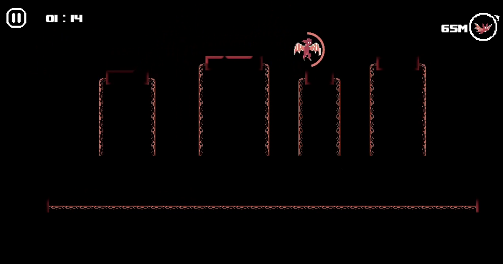
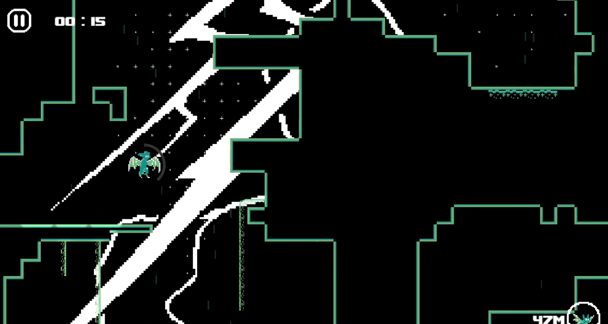

PROJECTS
EchoRush
| Development Period | March 2023 - June 2023 |
|---|---|
| Project Links |
|
| Relevant Skills |
|
| Collaborators |
|
| Awards |
SXSW 2023 - Best Student Game
UTS Tech Festival 2023 - Games Showcase: Best Game from Game Design Methodologies UTS Tech Festival 2023 - Games Showcase: People's Choice Award |
EchoRush is a fast-paced 2D platformer where the player takes control of a young bat who has been accidentally left behind by his family. The player is in complete darkness and needs to echolocate in order to reveal the environment around them, all the while maneuvering through obstacles and chasing after their family.
This project was created for the university subject 31262 Game Design Methodologies. Students formed small teams and participated in what was essentially a 6-week game jam, where 5 themes were presented and at least 2 needed to be incorporated into the game.
Our group decided to pick the themes of "Lower the Volume" and "Limited Screentime". We made the main mechanic tie into these two themes by having the echolocation lower in volume after being used, and by also having it be the only way that the player can see the environment.
The most notable things that I was responsible for during this project were:
- Programming player movement
- UI and UX design and programming
- Programming Level 2's wind mechanic
- Tutorial and Level 2 design


The movement system was largely inspired by that of Celeste's, which I had never played before prior to the development of the project, and that I had remembered that it was sitting in my Epic Games library collecting digital dust after I claimed it for free several years ago during one of Epic's weekly free game deals.
Anyways, the system features running, jumping, wall jumping, wall climbing, wall sliding, mantling, and gliding. There are quite a few things that happen behind the scenes in order to make all of the movement feel fluid. For example, jumping and wall jumping have "coyote time", which lets players jump while mid-air if they've missed the ground by a slight amount, which makes jumping feel more responsive and forgiving. The player also briefly keeps the momentum they gain from being pushed by strong wind or flowing water, and this momentum is lost while the player is normally grounded in order to make landing easier and more accurate to the player's inputs.
I didn't want the movement to resemble Celeste too much so I decided to swap the dash for a glide, which was inspired by Knuckles from the 2D Sonic the Hedgehog games. The glide mechanic is introduced in Level 2 alongside the wind mechanic. The design of both mechanics tie into each other; the player is only affected by wind while gliding. This leads to novel interactions with wind, as it can be a benefit or obstacle depending on how the area of the level is designed.